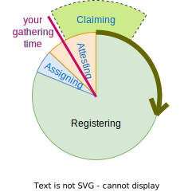
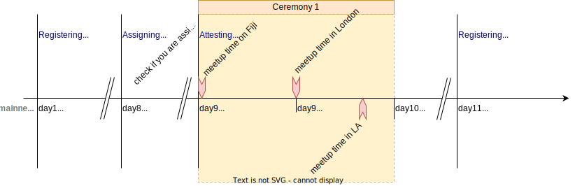
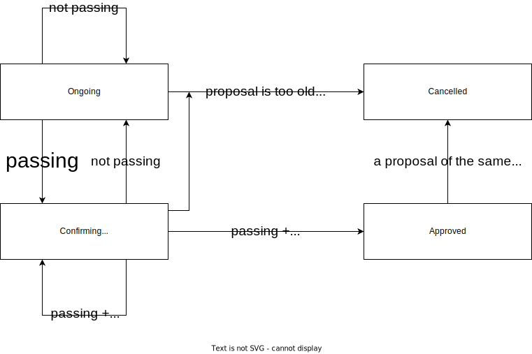

Introduction
This is becoming the main documentation resource for Encointer. It is work in progress.
For more detailed information refer to the whitepaper
Economics
This chapter shall be an opinionated interpretation of the status quo and what we expect to acheive with Encointer.
The Cantillon Effect
Richard Cantillon is known for his analysis on the effects of a change in money supply in a state on inequality. Around the year 1730 he wrote in his Essay sur la nature du commerce en général:
If the increase in actual money comes from the state's gold and silver mines, the mines' owner, the entrepreneurs, the smelters, the refiners and generally all those who work in them will increase their expenditure in line with their gains. At home they will consume more meat and wine or beer than they used to, and they will become accustomed to having better clothes, finer linen, and more ornate houses and other sought-after commodities. Consequently they will give employment to some craftsmen who hitherto had not as much work and who, for the same reason will increase their expenditure. All if this increased expenditure on meat, wine, wool, and the like will necessarily reduce the share of other people in the state who are not the initial beneficiaries from the wealth of the mines in question. The bargaining in the market, with the demand for meat, wine, wool and the like being stronger than usual, will not fail to increase their prices.
Nowadays, money supply isn't affected by mining gold and silver. It's the banks that issue money as credit - out of nothing. Translating Cantillon into our time, we should replace miner by banker. The rest of the story still applies. However, in spite of quantitative easing we don't see much price inflation for essential goods. This effect can be explained by observing that all this newly issued money never reaches the masses.
Encointer aims at inverting the Cantillon Effect. Instead of issuing money at the top, as credit to businesses and creditworthy individuals, we issue money at the bottom. Every individual gets a universal basic income: freshly issued money.
Universal Basic Income
A universal basic income (UBI) is a modest amount of money paid unconditionally to individuals on a regular basis (Standing). Most advocates of UBI aim at introducing it at a national level, as a monthly income to all legal (fiscal) residents and paid out in cash (denominated in national currency). Usually, a UBI is suggested to be financed by some form of taxation. As Van Parijs & Vanderborght explain, a national UBI may lead to justice among thieves (achieving more equality within a wealthy nation while there’s staggering inequality globally). They therefore argue for a global UBI, as do WBI or GBI.
Encointer aims at providing a global UBI in terms of units of cryptocurrency created on a regular basis and distributed to individuals (almost) unconditionally. Let’s examine the characteristics of such an encointer-UBI:
universal
Encointer is paid out to every human being able and willing to attend encointer meetus every 41 days and in posession of a smartphone. This unfortunately excludes persons with certain disabilities as well as those without a smartphone. Also, the need to travel to meetups comes at varying cost, depending on local population densities – a disadvantage to people living in remote areas. While this is not exactly unconditional, we think it is less exclusive on a global scale than introducing national UBI schemes in few wealthy nations. Moreover, encointer might promote the concept of UBI and pave the way for institutionalized national or global UBI.
basic
Nothing in the definition of UBI defines a specific amount. However, it is often understood to be sufficient to cover basic needs and therefore provide economic security to its beneficiaries. In order to do so, it should also be stable. Encointer is a new cryptocurrency with algorithmically defined monetary supply. Only the (global) market can define its purchasing power. global vs local currency
Cryptocurrencies based on public unpermissioned blockchains are global by nature. Encointer is such a cryptocurrency – with the important added feature of allowing local currencies to be issued, as will be discussed below. Encointer is paid out in equal nominal amounts to every individual. Technically, there is no decentralized way of doing otherwise as the P2P network has no awareness of national borders or the cost of living. As a means for UBI this is a mixed blessing. If UBI is expected to be suffient to cover basic needs there is no way to achieve this goal with a global currency. Purchasing power of one unit of global currency would vary hugely among different regions. The upside being that the UBI’s purchasing power is in that case expected to be higher in weaker economies, therefore reducing global inequality.
Because Encointer issuance involves meetups with known geolocation, it is technically feasible to issue local currencies which are algorithmically bound to high-interaction communities (though ignorant of national borders). This would allow the UBI to be denominated in a currency which is meant to be used within local ecosystems yet freely tradable globally. real value
The purchasing power of a unit of local encointer currency is market-based. It isn’t backed by gold or trust in some nations central bank. It’s value is determined by its usefulness as a store of value, medium of transfer or unit of account. Depending on national circumstances, the usefulness of encointer can vary. Where large parts of the populations are unbanked, encointer could complement national currency because it is accessible to everyone and more convenient to use and store than cash.
Another angle from which to define value could be international development aid. Encointer would allow to distribute aid to individuals living in a specified area directly by buying their local currency. It would even be possible to buy such local currency at fixed rates, thereby ensuring a stable value of that local currency. Administrative cost and misappropriation of development aid could be reduced significantly.
income
Encointer delivers an income in a fixed nominal amount of digital currency, paid (or issued) in regular intervals (for every ceremony meetup attended, happening in fixed intervals of 41 days) to all participating individuals. This income is obligation free and is given to the rich and the poor alike.
This income is paid for by issuing money and therefore by nominal inflation of encointer currency. The absolute nominal inflation rate depends on the number of ceremony meetup participants. And there is a correcting factor: Demurrage!
Literature
- Guy Standing, Basic Income: And How We Can Make It Happen
- Van Parijs & Vanderborght, Basic Income – A Radical Proposal for a Free Society and a Sane Economy
Demurrage
Encointer currencies feature nominal demurrage: All balances get devalued over time. The funds you’re holding lose 7% of their nominal value every month. Think of this devaluation like a payment to a solidarity fund that pays for the UBI. This way, Encointer can issue monthly UBI and still maintain stable money supply as shown by the simulation in the figure below. Another advantage of demurrage has been described by Silvio Gesell when he proposed Freigeld in 1916: Demurrage increases money velocity, which in turn fuels the local economy.

Money supply for a stationary economy with a demurrage fee of 7% per month and a population of 10’000 participants. After an initial phase, the UBI of 1 token per ceremony maintains a constant ratio to the total money supply and therefore maintains a constant real value.
Comparison
Demurrage is mainly known as a means to increase money velocity. Known local currencies have chosen demurrage to be in the range of 2-8% per year.
Due to technical limitations, demurrage is often charged linearly, like 2% of the face value per quarter as in the case Chiemgauer, where demurrage is applied by stamping paper bills. Encointer has more technical freedom and charges compound demurrage, as a percentage of its current value. The difference between linear and compound demurrage becomes clear after 50 quarters: Your 100 Chiemgauer have cost 100€ in demurrage fees. With compound demurrage, your 100 Chiemgauer would still be worth
100€ * (1-0.02)^50 = 36.42€
Local Currencies
Cryptocurrencies are fundamentally global in nature. Their networks are decentralized and agnostic to national borders. But global currencies have a severe disadvantage: Their purchase value can evolve very differently in different regions. The Euro is such an example, which is the official currency in many european countries with distinct fiscal policies and economic development. While there are political reasons to favor such a unifying currency, many economists doubt the concept. States with less economic growth have no option of devaluing their national currency. They can only get into debt - and then get forced into austerity, further weakening their economy.
Local currencies on the other hand are mainly affected by local economy.
Classification
Known examples of local currencies can be divided into mutual credit, local fiat currencies and time banks.
Mutual Credit
Mutual credit is a membership based, cashless currency created by clearing positive and negative balances between members when they trade. Usually, the accounts are denominated in national currency. If Alice provides a service worth 100$ to Bob, Alices balance will be +100$, Bob's will be -100$. Alice can later spend her 100$ balance in a trade with Charlie, who may be interested in a service Bob provides. Businesses are often allowed to have negative balances in the order of their usual turnover for a few months. These schemes rely on a local authority that performs due diligence when accepting new members and bans defaulters.
Examples are barter networks like Talent or business exchange networks like WIR, RES.
Mutual credit usually comes with high transaction costs. You might not always find the product you are looking for and it may be challenging to accept such currency for payment if you don't know where to spend it later.
In an economic environment of deflation, when there is a shortage of money because banks are reluctant to issue credits, mutual credit has shown to be of great value [1]. But when there's an abundance of money, these networks are unattractive and they generally don't further Encointer's goal of reducing inequality.
Local Fiat Currencies
Currencies like Wörgl's AB Schein, Chiemgauer or Berkshares are denominated in national currency. Often they have circulating paper bills, sometimes featuring demurrage. What they all have in common: They are only circulating within a local community and are worthless elsewhere. Often, they are redeemable for national currency, sometimes subject to a small fee. Sometimes redemption is restricted to businesses.
On the bottom line, such currencies can be understood as a loyalty programme promoting local spending, sometimes incentivized with discounts. They are successful in strenghtening the spirit of local community [1] and they can mitigate unemployment in an environment of deflation (Wörgl). However, due to globalization, local goods are often more expensive than imported ones. Therefore, these currencies are not attractive for poorer members of the community if they have to buy the local currency with national currency in the first place.
Grassroots Economics' Sarafu Credit in Kenya is a very innovative approach that shows significant social impact by empowering poor neighbourhoods by issuing money to local businesses directly. However, their concept introduces complexity, as money supply and distribution so far relies on careful engineering by experts from outside the community, for each community specifically. Moreover, Sarafu Credit is backed by donation money. While this may resemble a cash-transfer scheme, it actually isn't: Foreign capital is used as a fractional reserve for the local currency by applying bonding curves.
Time Banks
A very egalitarian category of local currencies are time banks. They proclaim that one hour's worth of service by one human has equal value to one hour's work by any other. Mostly, they work like mutual credit currencies, with the difference that the denomination is hours instead of national currency.
Examples are Blaengarw Time Centre, Dane County Time Bank
While the concept of time banks has shown to increase social capital [1], in practise they feature high transaction cost and liquid matchmaking showed to be challenging. The main benefactors end up to be the same individuals that also perform well on a free market based on national money. If your service is in high demand, you will be able collect more hours than you'll be able to spend on services you desire.
Examples
AB-Schein Wörgl
During the great depression, the austrian village of Wörgl attempted a monetary experiment to fight deflation: A complementary local currency.
| denomination | Schilling (1:1 national currency) |
| issuance | by the muncipality, as partial salary for infrastructure work |
| backing | (full?) reserve in Schilling, provided by wealthy individuals |
| demurrage | 12% / year linear pro rata |
| reimbursement fee | 2% |
| date | 1932 until prohibited in 1933 |
Observed Impact:
- lower unemployment (-16% while elsewhere +19% in 1933)
- 8-10x money velocity
- improved infrastructure: bridge, ski-jump, streets
Chiemgauer
| denomination | Euro (1:1 national currency) |
| issuance | by Chiemgau association, in exchange for Euro |
| backing | full reserve in Euro |
| demurrage | 8% / year linear pro rata |
| reimbursement fee | 5% (of which 3% go to local associations chosen by buyers of Chiemgauer) |
| date | 2003 until now |
WIR
WIR is rather a reciprocal exchange network (barter ring) - but it is an official currency (CHW). It is only open to businesses, not private persons.
| denomination | CHF (1:1 national currency) |
| issuance | by WIR bank as credit (with low interest rate) |
| backing | mixed-asset backed |
| demurrage | none |
| reimbursement fee | reimbursement prohibited, you have to spend it |
| date | 1934 until now |
Blaengarw Time Centre
| denomination | hours of work |
| issuance | reward for community work |
| backing | community events that can be attended with time credits |
| demurrage | none |
| reimbursement fee | no reimbursement |
| date | 2006 until now |
References
[1] People Money: The Promise of Regional Currencies, Margrit Kennedy, Bernard Lietaer, John Rogers, ISBN-13: 978-1908009760, 2012
On Saving, Loans and Interest
If you ask me what is the worst thing in the world, I will say it is compound interest
said Olusegun Obasanjo, president of Nigeria, in August 2000 after the G8 Okinawa summit.
All that we had borrowed up to 1985 or 1986 was around $5 billion and we have paid about $16 billion yet we are still being told that we owe about $28 billion. That $28 billion came about because of the injustice in the foreign creditors’ interest rates.
Compound interest makes debt grow exponentially, but nothing in nature grows exponentially forever. Sooner or later there will always be a saturation effect (usually modeled with an S-curve).
Even worse, our national money is created by commercial banks as credit, bearing compound interest. A priviledge for wealthy shareholders, which results in constantly growing debt and growth imperative, an unsustainable way to design our economy.
Compound interest is also a major cause of inequality [1]. It ensures that rich are getting richer while the poor are getting poorer.
Alternatives
A lender usually charges interest from the borrower. Besides giving the lender an income, interest also covers opportunity costs and compensates for the risk of the borrower defaulting on the loan.
It is beneficial to society if members with capital they can spare for a limited period of time provide their assets to members who need capital to build a business or suffer a temporary shortage.
In a society with a lot of social capital, lenders often provide their assets without a monetary incentive (or do you charge interest when borrowing money to a friend?). But this way of social lending does not scale well to larger loans.
Mutual credit is a way to better scale social credit beyond bilateral agreements (See WIR, LETS, RES). Interest-free credit is issued by clearing positive and negative balances when members trade, denominated in national currency. (See local currencies)
Saving Is No Virtue
One of the main reasons we're saving is the fear that we might not be able to cover for our needs at some point in the future. UBI addresses this fear by promising a minimal unconditional income until our death. Insurance is another answer to this fear.
The act of accumulating capital is considered a main reason for the growth imperative by [2].
Saving is also motivated by the desire to become wealthy and better off than others. This desire conflicts with Encointer's goals of reducing inequality.
For all these reasons, the design of Encointer disincentivizes saving in favor of spending or investing locally.
Encointer's Approach
Holding Encointer currencies comes at high opportunity costs because of demurrage. This is an incentive to spend or lend money at no interest. However, it may appear more attractive to exchange all perishable money you don't immediately need for other assets outside the encointer ecosystem (national currency, shares, bonds, crypto assets). This investor flight would decrease the real value of encointer currencies.
Encointer allows businesses the issuance of vouchers that are not subject to demurrage. Vouchers are a transferrable promise to deliver goods or services sometime in the future. If they are transferrable, vouchers are nothing less than self-issued money. Vouchers can be valid after a certain date and therefore become credit. This credit is paid back by goods and services, not by money.
The story of the Deli Dollar tells us how vouchers can be credit:
Frank Tortoriello runs a deli in Great Barrington, Massachusetts. In 1989 he wanted to move to larger premises but the bank would not lend him the $4,500 he needed, so he simply printed his own money. He did not forge dollar bills - he launched "deli dollars" which customers could buy for $8 and, at phased periods, cash in for $10 of food. He sold the lot in a month and raised $5,000.
 With these vouchers, investors pay 8$ today instead of 10$ at some defined point in the future. This discount pleases the human time preference. While this discount can be viewed as interest, it certainly isn't compound interest. It only applies once and its value is fixed. Still, it gives the investor an incentive to invest.
With these vouchers, investors pay 8$ today instead of 10$ at some defined point in the future. This discount pleases the human time preference. While this discount can be viewed as interest, it certainly isn't compound interest. It only applies once and its value is fixed. Still, it gives the investor an incentive to invest.
References
1 Biondi et al, Inequality, mobility and the financial accumulation process: a computational economic analysis, Journal of Economic Interaction and Coordination, 2019
2 Binswanger, Mathias (2019). Der Wachstumszwang: Warum die Volkswirtschaft immer weiterwachsen muss, selbst wenn wir genug haben. Wiley-CVH. p. 275. ISBN 978-3-527-50975-1.
Self-Sovereign Identity and Digital Personhood
With self-sovereign identity (SSI) the individual identity holders can fully create and control their credentials, without being forced to request permission of an intermediary or centralised authority and gives control over how their personal data is shared and used. Wikipedia
SSI is a key building block for any decentralized ecosystem. To establish trust online, we need to be able to present verifyable credentials to any counterparty of our choice. With SSI we can prove our name, residence, citizenship, diplomas online.
While identity is about distinguishing one person from another through attributes or affiliations, personhood is about giving all real people inalienable digital participation rights independent of identity, including protection against erosion of their democratic rights through identity loss, theft, coercion, or fakery
Digital Personhood
The Encointer protocol provides a decentralized sybil-defense mechanism. Because each human can only be in one place at one time, Encointer provides each human with a singular proof of attendance for every ceremony attended. We call this a unique-proof-of-personhood (uPoP). This uPoP is used for sybil-attack mitigation for Encointer's universal basic income, but can also be useful for other use cases as described below.
Privacy Considerations
With Encointer, users may maintain different identities on different platforms. The Encointer uPoP can be used to ensure one human only maintains one ID on one specific platform with a high degree of anonymity.
Sybil-Defense for Social Media
Let's assume a decentralized social media platform like subsocial enforces all its users to maintain only one account per human and prevents sybil attack with Encointer uPoP.
Alice Smith registers on subsocial with an alter ego of Sophie Summers because she doesn't want her presence on subsocial to be easily linkable to her physical world identity. Upon registration, subsocial would send a challenge to Alice to provide a uPoP. This challenge includes
- a platform token identifying subsocial (must be unique for subsocial)
- a timestamp (or at least a ceremony index)
- a confidence threshold (like: must prove attendance for N of the last M encointer ceremonies)
- a list of trusted community identifers (can be restricted to a region to also provide plausibility of location of residence) Encointer will itself attempt to maintain a web-of-trust score for communities which can be referenced instead.
Alice now requests her uPoP for subsocial from the Encointer platform. Encointer maintains a registry of attested attendance for all recent ceremonies. Alice is represented in this registry by changing pseudonyms for every ceremony. These pseudonyms are public keys and she now has to provide evidence that she knows all private keys for all pseudonyms she claims.
Given that Alice can prove attendance of the requested N of the last M ceremonies, Encointer provides a uPoP to be sent to subsocial in the form of a verifiable credential signed by one encointer-worker enclave's signing-key. Encointer then stores the subsocial platform token along with Alice's ceremony attendance attestations. Should Alice attempt to claim the same ceremony attendances again for another account on subsocial, Encointer would deny to provide a uPoP.
uPoPs need to be renewed over time because an adversary could register an additional account every few months otherwise.
Now imagine Sophie Summers becomes a victim of cyberbullying and Alice wants to drop that identity and create a new one under the name of Maria Gonzales. She will have to attend a few encointer ceremonies without claiming the attendance with subsocial. After a few months, she can register a new account on subsocial because she has collected enough unlinked evidence.
Community Web of Trust
The Encointer protocol builds communities based on trusted setups involving well-known people in every community. On a community level, this trusted setup is the root of trust. On a global level, these people may not be known nor trusted and communities will not trust each other blindly. Adversaries might maintain bot communities in the middle of the pacific.
Encointer can leverage an economic incentive to build a web-of-trust (WoT) among communities: Encointer issues local currencies. Communities that trade with each other will exchange their local currencies frequently in both directions on a decentralized exchange (DEX). Based on a few trusted seed communities that act as a root of trust (one per country, continent, world), the whole world may become linkable in a single WoT given geographically dense adoption of Encointer.
Polkadot Parachain Personhood Service
Should Encointer become a common good parachain of Polkadot, it could provide proofs of digital personhood to other parachains through cross-chain communication. As uPoP will be signed by SGX enclaves, a client parachain needs a trustelss way to query the enclave registry to verify a uPoP.
XCMP can be used to verify a certain enclave is registered as an encointer-worker and has passed remote attestation on the encointer platform.
Please see our sybil-defense demo video to learn how sybil defense works within the Polkadot ecosystem of parachains.
Encointer Protocol
The Encointer protocol is what ensures that
- only humans get a UBI
- every human can only get it once
We call the result of this protocol a unique proof of personhood.
Encointer leverages the fact that every person can only be in one place at one time. Every 10 days, participants are requested to attend physical key-signing meetups with small groups of random people. Because all meetups happen as one global ceremony all on the same day at the same local time, no one can attend two meetups.
The formal definition of the protocol can be found in our whitepaper
The Encointer Ceremony Cycle
Encointer's proof-of-personhood protocol demands in-person participation in regular ceremony meetups.
Ceremony Phases
The perpetual ceremony cycle is divided into three phases:

Registering
During this phase, community members can register for the upcoming ceremony.
It is also possible to register new communities or new meetup locations ONLY during this phase
If ceremony rewards have not already been claimed during Attesting phase, this can still be done now.
Registering is usually the longest phase in the cycle
Assigning
At the beginning of this phase, the chain will close registrations and pick a random seed for meetup assignments.
Now it is time to check your Encointer Wallet app if you have been assigned to the upgoming ceremony (making you an assigninee) and where you'll have to physically be present with your mobile at what precise time.
Assigning lasts for 24h to give people enough lead time between the moment when they know if the were assigned and where and the moment when they have to physically attend.
Attesting
During this 48h phase, the ceremony meetups will be performed all around the world around local noon (high sun, actually).
Assignees will physically meet at their assigned locations and times and mutually attest their personhood and attendance (attendees). They send their attestations to the chain. In the happy flow, ceremony rewards (community issued income) can be claimed immediately after the last attendee has sent their attestations.
Timing
On mainnet, the ceremonies currently happen in intervals of 10d. This interval is expected to be prolonged in the future, once the protocol has been tested enough.
On our testnets, the timing may be different and may change over time to allow for different test setups or public demos.

Encointer Personhood Reputation
Successful attendance at Encointer ceremonies gives you personhood reputation.
The more frequently you attend ceremonies, the higher your reputation.
Reputation Lifetime
Reputation has limited lifetime, currently set to 5 ceremonies on mainnet. The reasoning is that personhood reputation should not benefit early adopters as they are not more human than late adopers. The upside is also that identity loss has limited impact. You just start all over with a new account in case you lost your phone and did not backup your account.
Reputation Ratio
We refer to reputation as number of attended ceremonies during the last N ceremonies, i.e. 3/5 will prove that you are not maintaining 2 or more accounts with that reputation, because you can only attend one meetup per ceremony.
User Journey
Newbie
Usually, you will start with zero reputation as a newbie. You will need a tiny bit of your community's currency from someone else in your community or around 0.001 KSM (for Encointer Mainnet) to get started. You may register for a ceremony, but your assignment is not guaranteed because our threat model assumes an honest majority. As anyone can register as a newbie, we need to limit the number of newbies per meetup.
Endorsement
If you know the bootstrappers of your community currency, you can ask them for an endorsement. They can endorse you as a trusted contact and you get a guaranteed assignment for the upcoming ceremony.
Reputable
Once you have attended at least one ceremony successfully, your status is reputable and as long as you attend at least one ceremony within the reputation lifetime you will always have a guaranteed assignemnt as long as there are enough other participants.
No-Show Punishment
Every time you register as reputable, you actually spend you reputation on your guaranteed slot. If you successfully attend the ceremony, you'll get a fresh repuatation. However, if you do not show up although you have registered, your reputation will not refresh and you fall back to newbie status.
Spent reputation still counts for your reputation ratio, but you can't use it again to register for a ceremony.
Bootstrappers
Bootstrappers are the first few pre-defined participants in the first ceremony of a community. They build the trusted setup as they are the ones who initate a new community.
The bootstrapper status is immortal. Bootstrappers are always guaranteed an assignment if they register in time, irrespective of their recent reputation. The reasoning for this is that the entire community relies on the trusted setup and their special status allows a community to recover in case of an interruption or failure of an entire ceremony.
Bootstrappers are also granted the right to endorse newbies to accelerate community growth based on interpersonal trust. Bootstrappers should only endorse people who they have met physically in their community area and should not rely on some online message asking them for endorsement.
Community Identifiers
Community Identifiers are a short string identifying a particular community. The format is based on a geohash of the community's location combined with a hash of the list of all bootstrapper accounts.
Example: The Leu.Zuerich community has the cid u0qj9QqA2Q
js api
Unfortunatrely, Polkadot js/apps does not support our cid type natively, so the above example appears as
{
geohash: u0qj9
digest: 0x1012ea85
}
If you'd like to use javascript, please consider using our npm library encointer-js which adds support for all our types
Democracy
this feature is work in progress and not yet released. See Governance to learn how it currently works
The democracy module will bring decentralized governance to Encointer facilitating participants to take decisions. Such a universal human suffrage (one person one vote) governance shall render the current Encointer council obsolete. Examples of such decisions are the addition of new meetup locations to a community, an adjustment of the Demurrage rate or changes in the ceremony schdeule.
The decision making process should follow the subsidiarity principle, meaning that decisions should be taken on the lowest possible level. So for example, if a community wants to extend their region by adding some new meetup locations, only community members should be allowed to participate in the vote.
Scope of Democracy
This section describes the powers of Encointer's onchain democracy and at what level decisions are to be made.
Protocol Changes
Changes to the Encointer protocol are out of scope because they need to be decided by Kusama Relay-Chain Governance as Encointer is a common good parachain. Upgrades to the Encointer Protocol must pass a public referendum on Kusama, where KSM token holders decide.
Global Actions
These actions can only be decided upon by the quorum of all encointer communities globally
- Adjust ceremony schedule (can be adjusted anytime)
next_phase: force progress to next ceremony phasepush_by_one_day: postpone next phase change by one day push_by_one_dayset_phase_duration: adjust ceremony schedule phase durationsset_next_phase_timestamp: arbitrarily define the time for next phase change
- Manage communities (can only be enacted during Registering phase)
new_community: Register new communitiespurge_community: well...
- Manage Ceremony Parameters (may only make sense to enact during Registering phase)
set_min_solar_trip_time_s: security parameter to calculate minimal location distanceset_max_speed_mps: security parameter defining the maximal speed over ground of an adversaryset_inactivity_timeout: define how many ceremonies a community can be idle before getting purgedset_endorsement_tickets_per_bootstrapper: define how many endorsement tickets bootstrappers should get to invite people they trustset_reputation_lifetime: define how long proof-of-personhood reputation is valid for and storedset_meetup_time_offset: finetune meetup time difference to high sun
- Decide on Treasury Proposals
Community Actions
These actions can be decided per community for themselves
Only to be changed during Registering phase
add_location: add meetup location for communityremove_location: remove meetup location for communityupdate_nominal_income: the amount of basic income per ceremony per person per community
Not strictly related to a particular ceremony phase. could be adjusted anytime.
update_community_metadata: change name, currency, artwork IPFS cid for communityupdate_demurrage: change how fast balances are demurraged per community
Proposals
There is a set of predefined proposal actions that can be voted on (ie. set basic income to XY)
Everyone can start a proposal on an action (ie. set basic income to 48 LEU)
Every member of the community can use their reputation to vote on a proposal (the more reputation, the more voting power. Capped at reputation_lifetime)
A proposal gets approved if it is in a passing state (enough aye votes) for a long enough time period (confirmation period)
There can be multiple proposals up for vote simultaneously, even on the same action
When a proposal gets approved, all other proposals on the same action get cancelled, to avoid conflicts
When a proposal A gets approved, its enactment will be scheduled to the beginning of the next ceremony cycle. Should another proposal B get approved after proposal A’s approval but before it’s enactment, proposal B will be scheduled for enactment and proposal A will be cancelled.

Proposal Lifetime
The following examples will describe examples of how proposals change their state over time based on a changing number of votes and on other proposals.
Let
- Confirmation Period = 3 units,
- Proposal Lifetime = 12 units,
- X/Y denote X aye votes and Y total votes,
- O = Ongoing,
- C = Confirming,
- A = Approved,
- X = Cancelled.
For the sake of simplicity, we assume that just a simple majority is needed for a proposal to pass and there is no minimum vote required.
In the case of multiple proposals, all proposals shall be of the same action.

Voting
Eligible Reputations
We currently allow only reputations older that the ceremony cycle of the proposal start - 2 to participate in the vote. This is because the count of those reputations is not subject to change anymore. We need a reliable count of all eligible reputations in order to determine the maximum amount of possible votes, which is required 1. for AQB and 2. to determine the minimum turnout.
If we want to relax this in the future, we would need to come up with a way to handle the dynamic change of the electorate while a proposal is running. This is not trivial.
Adaptive Quorum Biasing (AQB) and Minimum Approval
In order to determine if a vote is passing, we use Positive Turnout Bias. In addition we enforce a minimum turnout of 5%.
Tutorial
For a tutorial of the democracy module, please see the Democracy Tutorial
Threat Model
Actor Profiles
We categorize users into the following psychological profiles for later scenario analysis:
Honest 
Will comply with the rules
Greedy 
Will try to cheat the system for his/her own benefit. Will collude with others
Strategies:
- Get reward without showing up
- Sign sybil id's to collect more rewards
Saboteur 
Will try to hurt the system, even if this comes at a cost. Will collude with others
Strategies:
- turn meetups invalid
- demoralize other participants by preventing them to get reward
More Roles
Sybil 
An identity that has no bijectively exclusive relationship with a participant. It can however have a bijectively exclusive relationship with a person who doesn't attend any meetup.
Manipulable 
An honest person that can be convinced to break the rules by social pressure. Will not strive for economic benefit.
Collusion Organizations
evil.corp
An organization of the greedy or saboteur participants.
Strategies:
- undermining randomization by sharing information and key pairs to allow collusion attacks at meetups
Assumptions
We assume
- The majority of ceremony participants with reputation sending their signed claims to the blockchain location is honest.
Reputation here means having attended at least one of the last two ceremonies and having been rewarded.
Rule Design
When designing rules there's a tradeoff beween preventing either the greedy or the saboteur's success. We can introduce very restrictive rules that will successfully prevent sybil attacks by the greedy, but these will make it very easy for the saboteur to demoralize participants by turning meetups invalid deliberately.
Rules
TODO: This is work in progress....
Meetup Assignment
- A meetup has at least 3 assigned participants
- A meetup has at most 12 assigned participants
- Only 1/4 of assigned participants may have zero reputation (be newcomers)
- this rule directly impacts the maximum adoption rate. A population of 1M will take at least log(1M/12)/log(4/3) <= 40 ceremonies
Meetup validation
- (NEEDED?) The signature reciprocity is at least X
- (NEEDED?) The reciprocal edge connectedness is at least M-2, where M is the number of participants with at least one signature by another party.
- (OK) At least two participants signed each other mutually
- (OK) Disqualify a participant if her vote is not equal to the number of participants signed by her.
UBI/Reward Issuance
In order to receive a UBI, a participant
- (OK) must be registered and assigned to the meetup
- (OK) the meetup must be valid
- (TODO: ARGUE THRESHOLD) must have her claim signed by at least 1/3 of registered participants
- (OK) must have signed the participants that are necessary to fulfill rule above in return
Remote Attacks
Flooding Attack
An adversary could register large numbers of fake participants who will never show up. This could prevent legit persons to participate.
Mitigation:
- Limit the number of assigned participants with no reputation
Non-Protocol Threats
Aggression, Detention
If meetup locations are publicly known, participants could face aggression from saboteurs or they could be detained if participation is suddenly judged illegal.
Mitigation:
- The set of possible meetup locations has to be significantly larger than the need in order to host all participants.
Abduction
If celebrity meetup participants can be linked to their names and meetup locations in advance, they might get kidnapped
Mitigation:
- Make sure meetup assignments are kept confidential at least until the meetup has passed.
Behavioural Meetup Scenario Analysis
The scenario analysis is structured by the number of participants who were assigned to a meetup
3 Registered Participants
Happy Flow
All participants only sign for persons present at meetup location.

reciprocity = 1.0
reciprocal edge connectedness = 2
Noshow of one is treated with mercy for attendees

reciprocity = 1.0
reciprocal edge connectedness = 1
Attacks
Social Engineering
Adversary B talks A into signing his sybil ID

reciprocity = 1.0
reciprocal edge connectedness = 2
As there is no honest participant in this meetup, this attack is out of scope of our threat model.
Mitigation
- randomized meetups should reduce the chance that someone could be assigned with his sybil to the same meetup. In weakly populated areas, this can happen easily though
this scenario violates threat model assumptions
Exclusion
Adversary B refuses to sign A and signs C instead

A variant of this would be that B isn't even present at the meetup
reciprocity = 0.5 (1.0)
reciprocal edge connectedness = 1
Mitigation none
- randomized meetups should reduce the chance that someone could be assigned with his sybil to the same meetup. In weakly populated areas, this can happen easily though. evil.corp could also increase chances.
- Only allow meetups with more participants (>=4?) in order to reduce the impact of a single participant on outcome.
this scenario violates threat model assumptions
4 Registered Participants
Oversigning

Variant:
- B and C are not present at meetup, removing the reciprocal edges to A
reciprocity = 1.0
reciprocal edge connectedness = 2
Mitigation:
- (NOK) Introduce Reputation (previous attendance to successful meetups)
- (NOK) Introduce Rule "lowest vote with reputation wins" * This rule, however, will cause B, C, and D to vote "3" showups and to refuse to sign A. Reputation doesn't help because B and C could have reputation as well.
- (NEEDED?) quarantine non-consistent meetups
At this meetup, 3/4 of registered participants are malicious.
this scenario violates threat model assumptions
Oversigning light

reciprocity = 1.0
reciprocal edge connectedness = 1
Mitigation
- only accept subgraph with recipr. edge connectedness of M-2 for M=4 here. This will cut off D.
Location Spoofing

C and D could pretend to be at the meetup location. The ceremony validation has no way to know if A-B is legit or C-D.
Variants:
- D could be a real person colluding with C
Probability:
- low because of randomization if number of meetups assigned is high
- evil.corp could redistribute sybil id's after meeting assignments, undermining randomization
Mitigation:
- (NOK) track participant locations and require plausible movement trajectories before meetup. not sound because it is easy for C+D to spoof realistic trajectories
- (NEEDED?) Quarantine: The validator can detect that the meetup is split and therefore not consistent. Issuance could be conditional to future ceremony attendance
- (OK) The pair with higher reputation wins, the other doesn't get a reward issued.
- (NOK) invalidate non-consistent meetups, preventing 2 illegit rewards while demoralizing 2 honest participants.
At this meetup, 1/2 of registered participants are malicious.
5 Registered Participants

Mitigation:
- Disqualify participant if vote != number of peers she signed

Mitigation:
- none, if C,E,D all have reputation. the majority can always win.
This violates threat model assumption 1
Conclusion
As long as the threat model assumptions are held, we can find a set of rules that prevents:
- issuing more rewards than there are honest participants (while there is no guarantee that every honest participant will get a reward in face of malicious behaviour)
The probability that you as a participant experience a meetup with evil majority follows the poisson cumulative distribution function:
Given the overall proportion of malicious actors , the probability that you (being an honest actor) will suffer from malicious behaviour at one specific meetup depending on the number of participants in your meetup n is

Decentralization
Decentralization can mean very different things and is never black and white but rather a goal that can never be fully achieved. Encointer aims at
- architectural decentralization: avoid a single point of failure through redundancy (different machines in different geographic locations)
- political decentralization: distribute control among many individuals and organizations
- logical decentralization: ensure that the system can continue to exist if it is divided into arbitrary subgroups
The first two are common for blockchains. Logical decentralization, however, isn't a feature of global blockchains. There may only be one truth globally. Encointer, on the other hand, can be split into its shards of local communities and continue to exist - with restrictions on finality and interoperability. This way, Encointer could even continue to exist in countries that eclipse their citizens from the internet or selective parts of it. At least temporarily.
Over all, resilience is what we aim for.
Blockchain
Why does Encointer need a blockchain? All the economic aspects could be implemented with a central server as well.
We develop the Encointer software with altruistic intentions. Still, Encointer may likely be judged as unlawful in certain juristictions and repression may follow. If a trusted entity would operate Encointer as a service, that system would be very vulnerable to states or other economically powerful entities.
P2P systems, including blockchains, have proven to be very resilient versus state intervention.
Consensus and Security
On Blockchains, code is law. This law needs to be secured against malicious attacks. While the security of the bitcoin blockchain is measured in mining hashpower, the security of PoS chains like Polkadot is measured in staked capital. Both approaches boild down to the simple rule: the "biggest" blockchain is the most secure.
As Encointer is no business case or speculative asset by design, it needs to rely on other things than capital or hashpower for security of consensus.
Thanks to its proof-of-personhood, Encointer could apply democratic consensus like described in PoPcoin. However, a web of trust would have to be established first.
Polkadot is a heterogeneous multi-chain system with shared security. While this approach reduces the amount of capital Encointer would have to bind for equal security, it still is a profoundly capitalistic system and competition around parachain slots may make it impossible for Encointer to become a Polkadot parachain.
While the final solution is yet to be discovered, Encointer will start off as a proof-of-authority (PoA) chain which is initially operated by trusted entities. The worker registry, however, will be permissionless. Anyone with a suitable TEE will be able to operate workers for communities of their choice.
Once possible, Encointer will attempt to become a parachain of Polakdot or Kusama by means of crowdfunding.
Should this fail, it can still get finality for its PoA consensus by running as a parathread instead.
Governance
Encointer is no static system. It shall evolve over time and different communities shall be able to adjust their local rules independently. Such a foederalistic governance is possible thanks to Encointers' self-sovereign identity (SSI) features. Encointer's proof-of-personhood allows to have democratic voting. Its proof-of-location ensures that people can only vote on matters concerning their local community. This local governance shall rule over the parameters of individual community currencies, such as defining meetup locations, changing the demurrage rate, changing the UBI amount or the name of their currency.
Global governance shall leverage the web-of-trust among communities. Democratic votes are thus weighted with the trust score of each community. Global governance shall decide on updates to the blockchain logic and global parameter such as the ceremony period, the set of trusted TEE manufacturers or the distribution of fees.
Privacy
Encointer protects its users' privacy by design:
- transfers of local community currencies are private by default. No one learns who sends how much to whom.
- account balances of local community currencies are private (while aggregated values such as a community's total issuance and turnover are public)
- ceremony meetup assignments are processed confidentially because that strenghtens the Encointer protocol by hindering collusion.
Philosophy
Privacy can also be a threat to communities. There is a good reason why most nation states enforce anti money laundering (AML) laws. Encointer aims to follow a simple rule: The smaller the amounts, the higher the privacy should be. And vice versa - the higher the amounts, the higher the transparency should be. This - unfortunately - is pretty much the opposite of what we experience in today's reality as big capital and gains can easily be offshored and obscured while everyday purchases are traced down to the penny.
As encointer is made up of many small communities - none of which will have a significant market capitalization on a global scale - it will never be easy to move great amounts of capital through these local currencies unnoticed. That's why Encointer simply is not an attractive channel for laundering money.
Governance
Subsidiarity
The Encointer Network is governed on multiple levels. The design paradigm is subsidiarity: issues should be dealt with at the most immediate (or local) level that is consistent with their resolution.
Global Protocol Scope
Encointer is a common-good parachain of the Kusama Network. The Kusama Network provides its security to Encointer, but requires that Encointer protocol updates are decided by KSM holders who granted the common-good slot in the first place and have to evaluate if the update is sound and still complies with common-good criteria.
Global Operative Scope
The Encointer protocol defines certain global parameters which are common to all communities. Changing such parameters requires a global decision
Local Community Scope
Each community can decide on parameters that only concern itself. Such parameters are demurrage, nominal income per ceremony and community metadata like Logo, Name
Council
Encointer aims at democratic governance based on one-person-one-vote. However, democracy requires a representative number of users and communities to be meaningful and legitimate. Therefore, governance is delegated to a council until the community deems to be ready for democracy.
The council currently consists of 7 members of the Encointer Association. Each local community may elect a representative which shall join the council.
Powers of Council
The council currently governs the Global Operative Scope and the Local Community Scope. Through propsals, it can execute the following actions:
-
Adjust ceremony schedule
next_phase: force progress to next ceremony phasepush_by_one_day: postpone next phase change by one day push_by_one_dayset_phase_duration: adjust ceremony schedule phase durationsset_next_phase_timestamp: arbitrarily define the time for next phase change
-
Manage communities
new_community: Register new communitiesadd_location: add meetup location for communityremove_location: remove meetup location for communityupdate_community_metadata: change name, currency, artwork IPFS cid for communityupdate_demurrage: change how fast balances are demurraged per communityupdate_nominal_income: the amount of basic income per ceremony per person per communityset_min_solar_trip_time_s: security parameter to calculate minimal location distanceset_max_speed_mps: security parameter defining the maximal speed over ground of an adversarypurge_community: Remove a community by from the registry entirely, wiping all balances, reputation and locations
-
Manage Ceremony Parameters and Memory
set_inactivity_timeout: define how many ceremonies a community can be idle before getting purgedset_endorsement_tickets_per_bootstrapper: define how many endorsement tickets bootstrappers should get to invite people they trustset_reputation_lifetime: define how long proof-of-personhood reputation is valid for and storedset_meetup_time_offset: finetune meetup time difference to high sunpurge_community_ceremony: garbage collect outdated reputation if necessary due to parameter changesset_time_toleranceset how precisely the meetup time needs to be attested to be considered validset_location_toleranceset how precisely the meetup location needs to be attested to be considered valid
-
Manage Currency/Fee Parameters
setFeeConversionFactortune community currency extrinsic fees relative to KSM fees and community income
-
Treasury
- accept / reject treasury spend proposals (the treasury receives KSM fees for extrinsics plus potential donations
In the beginning, onboarding of new communites will be permissioned, subject to the council's approval. The team sees no other way to avoid bot communities squatting the earth's surface. Over time, a web-of-trust will build and new communities can be onboarded by endorsement of other communites.
Testnets
Encointer maintains two testnets: Gesell and Cantillon.
The networks differ in their goals and designs:
Gesell
Aimed at automated testing of the protocol and our mobile phone app.
- Time-warping allows to script bot populations and hold ceremonies every 30min.
- Complete transparency of all registries and balances. Everything happens on-chain.
- experimenting with real ceremony meetups, physically meeting people.
Cantillon
The main purpose of Cantillon is privacy enhancement through Trusted Execution environments (with enclaves still in development mode, so privacy is not guaranteed before we move to production mode)
Watch our demo video on bootstrapping a bot community
Outlook on Mainnet
The mainnet is planned to become a parachain of Kusama, the canary network of Polkadot. The chain security will depend on Kusama relay chain.
Time Warping for Testnets
In order to understand the different timing on our networks, we offer the following figure:

- Temporarily, we will apply 30min ceremony cycle to both Gesell and Cantillon*
Testnet Gesell
Gesell is our first testnet. It allows you to bootstrap new local currencies and perform regular proof-of-personhood ceremonies that give participants a universal basic income. This network is meant for testing with bot populations in order to audit and stress-test the protocol. Gesell does not give you the privacy that later networks will provide. We do not expect real physical meetups to happen on this network except occasional demo meetups.
Design
Gesell is based on substrate and its nodes consist of four pallets

Scheduler
Keeps track of time and maintains the ceremony state-machine phase changes.
Currencies
Registry for all local currencies with their properties and meetup locations
Balances
The individual's account balances in all currencies, featuring demurrage.
Ceremonies
Where participants register for ceremonies. Assignment of meetups and issuance of UBI upon proof-of-personhood.
Testnet Cantillon
** DISCONTINUED **
Cantillon was the testnet to showcase the privacy features using trusted execution environments with Integritee technology
It is still on our roadmap to include these features, but currently, the focus lies on running a common good parachain on Kusama
Design
Cantillon uses the same pallets as Gesell, but the privacy-sensitive ones will be executed off-chain, inside a trusted execution environment (TEE). SubstraTEE will be the framework that isolates sensitive information inside Intel SGX enclaves (Alternative TEE technologies are being evaluated)

Encointer Kusama Parachain
Encointer's productive mainnet is planned run as a common good parachain on Kusama.
More info coming...
Bazaar
What is a local currency without the possibility to spend it on desired goods and services? How can you find businesses that accept the local Encointer currency? Encointer features a builtin classifieds system for advertizing businesses and offerings we call bazaar.
Anyone can register businesses and offerings to be advertized within their local community. All metadata and images for classifieds are stored on ipfs. The ownership of classifieds is registered on the Encointer blockchain.
Vouchers
Every business may issue their own transferrable vouchers and can therefore issue their own loyalty money or acquire loans from the community. As businesses are owned by real people whose digital personhood has been attested at Encointer ceremonies, these vouchers come with a sybil-defense and the credit rating of businesses is immutably recorded.
Encointer Wallet App

The Encointer app is all that users need to participate in a local community. It serves as a wallet and lets you participate in Encointer ceremonies.
Install
Android


iOS
Feature Phones: KaiOS
Feature phone support planned in the future
Dumb Phones: USSD
For the most simple category of phones we plan support in the future by using a USSD gateway
Usage
Our preliminary instructions:
- Onboarding
- Backup and restore your account
- Inviting and endorsing newcomers
- Ceremony Instructions: How to collect Community-Issued Income
Acknowledgements
Encointer Wallet is based on previous work by polkawallet.io
Select Community
This section shows you how to select a community on a specific network.
Select Network
By default, the Encointer Wallet App connects to mainnet on Kusama. This is fine for most users and you likely can skip this section. In order to test on our Testnets, you'll need to configure the app to use another network endpoint.
- Enable developer mode: Profile -> tick developer mode checkbox
- Tap "Change Network: nctr-k"
- In the left column, tap the desired network:
- NCTR-GSL: Testnet Gesell
- NCTR-R: Testnet Lietaer on Rococo
- NCTR-K: Mainnet on Kusama
- NCTR-GSL-DEV: Local solochain using
ws://10.0.2.2:9944for an emulator setup
- Tap on one of your account names (not the identicon)
- Wait until you see a green tick besides (current: nctr-gsl) on the profile page
- Disable developer mode
Select Community
Once your app is connected to the right network where you registered your new community, you can now switch the app to your community:
- On the top of the home screen, tap the community symbol with your account identicon
- Switch Community -> (+) Add community
- On the world map, browse for your community and tap the pin
- tap again the popped-up name of your community
Register for a ceremony
Assuming you have previously
you can now check when the next ceremony will take place. If you would like to attend the upcoming ceremony, you can tap the register button. You will need a tiny bit of inital funding to pay transaction fees. Either you get community currency from someone in your community, or you get KSM, the native token of the Encointer mainnet on Kusama.
According to the ceremony cycle you will have to await the assigning phase until the app shows you if you have been assigned and when you have to be in which location.
On the day of the meetup, be on time at the right location and perform a ceremony meetup with your fellow attendees you will hopefully encounter there.
Perfrom a Ceremony Meetup
Assuming you have previously
- installed the Encointer Wallet app
- selected you community
- Registered for the current ceremony
- You have been assigned to a meetup
- You are now physically on time in the right location together with a few fellow ceremony attendees
Voting
The meetup starts with tapping the button "start meetup" on the Encointer Wallet app home screen. As a first human confirmation, you'll have to vote on how many attendees are present, including yourself.
Once everyone has voted, no further attendees can join. If the group decides to include a latecomer, the entire meetup has to be started from the beginning.
Attesting Personhood
After voting on the number of attendees, your app shows a QR code which is your claim of attendance which has to be signed by everyone else to prove your personhood and attendance.
Procedure
The following procedure is just a suggestion, but has shown to cause minimal duration and confusion.
- The group of attendees forms a C-shape and everyone holds the phone upright with the QR code screen facing to the center to minimize reflections from the sky or the sun
- The person at one end of the C shape starts scanning on after the other and when finished, waits at the other end of the C-shape showing her QR code.
- As soon as the scanning person has successfully scanned the first two attendees, the next outermost attendee can start scanning, but should not overtake the previous scanner
- as soon as everyone has scanned everyone (i.e. scanned 8/8 if the vote was 9 attendees), the meetup can be closed
Closing the meetup should only be done after confirming that all attendees have scanned everyone. After closing the meetup, the app suggests to submit attestations. If you are online, you can directly submit the attestations and ensure you get notified of success. Should you not have internet connection at the time, you can still submit within the following 24h.
Reward Issuance
Ceremony rewards, (AKA community issued income, CII) can be claimed for each performed meetup. The amount of CII is defined per community.
Your Encointer Wallet app will claim automatically as soon as possible, but you can trigger the process manually.
Immediate Claim
If all attendees are online and were able to submit their attestations, the rewards can be claimed immediately, under the condition that the majority of assignees has show up and has been attested.
Late Claim
Should the above not be the case, attendees have to await the beginning of the registering phase before claiming their CII.
Social Contract
It is up to every community to define what they understand as puntuality and as human.
Each community is just as strong as their social contract compliance. If you allow latecomers, you may risk to allow them to attend two different meetups and claim a community issued income twice. Same if you allow an attendee to bring and use two or more phones because their friend alledgedly is sick or otherwise incapable of attending. We suggest to apply rather stric rules as this strengthens the trust in your community by its members - and also by members of other communities globally.
The Encointer protocol has no notion of personhood itself. We expect communities to attribute personhood to all humans, irrespective of age, gender, race, citizenship, sexual identity and preferences, social status, criminal history or any other attributes of identity.
Explorer
The explorer is a Web UI tool to visualize chain data such as the communities and bootstrappers, the phases and ceremonies around the world. A working example can be visited at explorer.encointer.org.
Checkout the explorer repository.
In the terminal, go to the the root directory of the repo and enter:
git clone https://github.com/encointer/explorer
cd explorer
yarn install
yarn start
Then you should be able to view the explorer in your browser at http://localhost:8000/.
At the bottom, the registered chain is displayed. You can click on it and change between the local and remote chain.
You can also set the rpc address via the query paramter, for example:
localhost:8000?rpc=ws://127.0.0.1:9945 will connect to the chain on localhost with port 9945.
The registered community should be visible in the explorer.
Basic CLI usage
The Encointer CLI is a low-level tool to interact with an Encointer chain. It allows to query state and to send extrinsics.
Setup
We suggest you run the following in an Ubuntu 22.04 environment
Download the CLI for our latest release:
wget https://github.com/encointer/encointer-node/releases/latest/download/encointer-client-notee
chmod +x encointer-client-notee
# Testnet Gesell node endpoint
NURL=wss://gesell.encointer.org
NPORT=443
alias nctr-gsl="./encointer-client-notee -u $NURL -p $NPORT"
# Testnet Lietaer (on Rococo) node endpoint
NURL=wss://rococo.api.encointer.org
NPORT=443
alias nctr-r="./encointer-client-notee -u $NURL -p $NPORT"
# Encointer Mainnet (on Kusama) endpoint
NURL=wss://kusama.api.encointer.org
NPORT=443
alias nctr-k="./encointer-client-notee -u $NURL -p $NPORT"
# local dev node
alias nctr-dev="./encointer-client-notee"
In the following, we will show usage with testnet Gesell, using our alias nctr-gsl. But You can use any of the aliases above to interact with the other chains in the same way (caveat: deployed versions of the CLI API can vary)
Get Ceremony Phase
nctr-gsl get-phase
This will return any of
Registering: you can register participants, communities, locationsAssigning: ceremony meetup assignments can be queriedAttesting: ceremony meetups can be performed
List Communities
nctr-gsl list-communities
will yield something like
number of communities: 5
e5dvt5mjcem: bot-tugs locations: 9
u0qj94fxxJ6: EdisonPaula locations: 3
srcq45PYNyD: Adriana locations: 5
u33e0719fDB: Decoded Berlin locations: 3
69y7j4ZEXmy: Decoded Buenos Aires locations: 8
Each community is shown with
- its community identifier (cid) which is a 11-character string
- its Name, given by community lead
- its number of ceremony meetup locations
You can also explore communities for our different networks using our explorer
Manage Account Keystore
The CLI offers very basic wallet functionality, managing a keystore in a local subfolder my_keystore where account secrets are stored in plaintext. Do not use in production!
Create a New Account
nctr-gsl new-account
The printed result will be your new account address
List Accounts in Keystore
nctr-gsl list-accounts
Query Account Balances
nctr-gsl balance 5CSLXnYZQeVDvNmanYEJn4YXXhgFLKYwp2f216NsDehR8mVU
you can add a cid to query the balance for a specific community
nctr-gsl balance 5ChwkE8kd2qagyiCikP2Ns2T6vWh7dbURx54gXcPKw8NotNp --cid srcq45PYNyD
or get all balances (first, the native token balance, then all community balances)
nctr-gsl balance 5ChwkE8kd2qagyiCikP2Ns2T6vWh7dbURx54gXcPKw8NotNp --all
Faucet
Testnet Gesell features a faucet, so you can pre-fund your new account
nctr-gsl faucet <Account>
How to Register an Encointer Community (manually)
We assume you have set up the CLI client previously
This tutorial will guide you through the process of setting up a new community on any of our networks
If you haven't done so, please learn about the ceremony cycle of the Encointer Protocol
Set Up Bootstrappers
As Encointer is all about proof of personhood, you will need people to get started. We suggest to pick 10 diverse, dependable and trustworthy members of your community for a trusted setup. This first group of people performing the very first ceremony of a new community we call Bootstrappers.
If you want to test all by yourself, we suggest you create 3 bootstrapper accounts using 3 phones and register your community on Testnet Gesell. In the following, we will assume you're just testing yourself, but the process is very similar if the accounts are for real bootstrappers.
All the bootstrappers need to install the mobile app and set up a new account. You can then collect all the bootstrapper accounts by sharing them from within the app by going to profile -> tap account -> share account -> send link
The bootstrapper accounts need initial funding. On our testnets, you can use the faucet, on Mainnet, you can supply KSM or any other existing community currency
nctr-gsl faucet 5D5V3couq7o42FYkLG4vVhaqQPrfk4NT3kWzZJH66ZeHr3iG 5HB4kbo67Hgv846DNMRnt7i1xNMum66LLBFkqtghKsNwRknM 5GxWKwbrPL88uH3Zv7zAiz6ozdpSFHzSfK1aXhVxDcNQYU8t
Note: the displayed account addresses will differ from yours when you follow the tutorial. They are just provided for readabiltiy. Use your account addresses instead of the ones used in the tutorial.
To register a community, you need to create a specfile.json containing details about the community and an account with funds to the chain client.
Define Ceremony Meetup Locations
We need to define in what region the community shall be issued. For this we use the geojson standard to define a set of meetup places and add some meta-information about the community. You can use geojson.io to select meetup places on a map (define a few "Points"). Make sure that you select places that are >100m apart. You also need to keep this minimal distance from other registered communities.
If you want to be sure which location will be the bootstrapping location, please specify only a single location and register more locations after the bootstrapping ceremony.
The number of locations that you should define depends on the size of the population N you'd like to bootstrap. As a rule of thumb, there should be at least N/12 locations but the more locations, the better.
Specfile
The specfile defines the set of bootstrappers, the initial set of ceremony locations as well as metadata like name, symbol and icons stored on IPFS.
An example of the specfile.json is shown below with one meetup locations:
{
"type": "FeatureCollection",
"community": {
"meta": {
"name": "Mediterranea",
"symbol": "MTA",
"assets": "QmVmew4gZHyCK2Fv4UBgsvfLdf1Q6UiF9MD6wsfPCuNVQp"
},
"bootstrappers": [
"5D5V3couq7o42FYkLG4vVhaqQPrfk4NT3kWzZJH66ZeHr3iG",
"5HB4kbo67Hgv846DNMRnt7i1xNMum66LLBFkqtghKsNwRknM",
"5GxWKwbrPL88uH3Zv7zAiz6ozdpSFHzSfK1aXhVxDcNQYU8t"
],
"demurrage_halving_blocks": 2628000,
"ceremony_income": 100
},
"features": [
{
"type": "Feature",
"geometry": {
"type": "Point",
"coordinates": [
-28.102619,
31.141935
]
},
"properties": {}
}
]
}
- replace the account addresses in "bootstrappers" with the ones you have created and add additional meetup locations.
demurrage_halving_blocksof 2'628'000 corresponds to 1 year if block time is 12 secondsceremony_incomein this example is set to 100.00 MTA
ADVANCED
ceremony income and demurrage rate are stored as a fixpoint type (I64F64 - or 64 signed integer bits before the decimal point and 64 bit thereafter). That is why the raw numbers in js/apps can be confusing. An income of 100.00 MTA will be represented as
>>> 100*2**64 1844674407370955161600demurrage halving blocks will first be translated to an exponential function coefficient:
>>> int(-1*np.log(0.5)*2**64/2628000) 4865414248555Applying demmurage of one block then becomes: balance * exp(-demurrage_rate). In the case of a balance of
100.0demurrage for one block would decrease the balance to>>> 100.0*np.exp(-1*4865414248555/2**64) 99.99997362453999explanatory code is provided in python syntax
Use Your Own Community Icon
The example specfile features a dummy icon. You may want to brand your community with its own icon. You'll need a circular icon in SVG format.
Place your icon into its own folder, i.e. ./leu.rococo/community-icon.svg
Make sure your SVG community icon doesn't include <style> attributes
cargo install svgcleaner
svgcleaner community_icon.svg community_icon.svg
Upload the entire folder to ipfs:
- using your own ipfs server
ipfs add -rw --pin ./leu.rococo
- using infura's client:
ipfs-upload-client --id <your infura id> --secret <your infura secret> --pin ./leu.rococo
test if you can fetch the cid through the encointer gateway which will be used by the app
wget http://ipfs.encointer.org:8080/api/v0/object/get?arg=QmXydp7gdTGwxkCn24vEtvtSXbR7wSAGBDLQpc8buF6T92/community_icon.svg
It may take a while to sync from the server you used for uploading and pinning. IPFS routing isn't very reliable nor fast yet, unfortunately.
Once you can fetch your icon, replace the IPFS cid in the community specfile with the cid of your icon folder
Register your new community
Register your new community with the specfile.json. Signer should be an account in your keystore which is able to pay fees:
caveat: The following step is possible to perform by anyone on out testnet Gesell. But on our mainnet you'll need to pass our onboarding process to be able to register your new community
nctr-dev new-community specfile.json --signer 5D5V3couq7o42FYkLG4vVhaqQPrfk4NT3kWzZJH66ZeHr3iG
Your community has been registered and the return value is your community-identifier (cid). Let's check the registry again:
nctr-dev list-communities
Congratulations! You are ready to select your community in the Encointer Wallet app perform your first Ceremony with your bootstrappers.
Register new meetup locations
Once your community starts to grow, you'll have to make sure there are enough meetup locations. Otherwise less people will be assigned to ceremonies and your community will stall.
As a rule of thumb, you should always have at least one location for every 8 ceremony participants.
selecting locations
Meetup locations should be selected carefully. They should fulfill the following requirements:
accessibility
Locations should be outside and publicly accessible at all times. Also for people in wheelchairs. Moreover, think about how people from around town will travel to a location.
easy discoverability
Landmarks like crossroads, squares or monuments are helpful to discover the location if given just a pin on openstreetmaps
enough space
Imagine 10 people standing in a circle. That's how much space your location should provide without hindering any traffic
medium crowdedness
Don't force people to meet at a very secluded or remote place where no other people would ever go. This could frighten participants who are about to meet other people they don't know yet.
Don't pick very busy locations neither, as this could disturb smooth meetup performance
shelter
In regions where rain is likely, consider picking locations that offer shelter nearby.
Also, shade is a good feature for hot days. Moreover, bright sunlight may degrade QR code scanning performance
identity-shaping
Think about what your community stands for and consider locations that have a meaning
close to acceptance points
What a magic moment if you can attend your first ceremony and spend your income right away in a store nearby!
specify locations
We assume you have set up your environment along basic cli usage. Like you did when registering your community, you can use geojson.io to define a geojson file with all the new locations you'd like to register
Let's define 4 new locations for the Adriana community on Gesell:
newlocations.json
{
"type": "FeatureCollection",
"features": [
{
"type": "Feature",
"properties": {},
"geometry": {
"type": "Point",
"coordinates": [
13.151750564575195,
44.67957825832565
]
}
},
{
"type": "Feature",
"properties": {},
"geometry": {
"type": "Point",
"coordinates": [
13.127632141113281,
44.680249583587546
]
}
},
{
"type": "Feature",
"properties": {},
"geometry": {
"type": "Point",
"coordinates": [
13.127717971801758,
44.69733524402991
]
}
},
{
"type": "Feature",
"properties": {},
"geometry": {
"type": "Point",
"coordinates": [
13.151750564575195,
44.69721322146929
]
}
}
]
}
register locations
Registering locations is only possible during the registering phase of the ceremony cycle. Check the current phase with
nctr-gsl get-phase
Register locations with
nctr-gsl add-locations newlocations.json --cid srcq45PYNyD --signer 5D5V3couq7o42FYkLG4vVhaqQPrfk4NT3kWzZJH66ZeHr3iG
You should see encointerCommunities.LocationAdded events for each of your added locations
If you now visit explorer.encointer.org you should see the new locations if you zoom the adriatic sea.
how to add locations on mainnet
On Encointer's production network, no single person is allowed to register new locations. At the current state, Encointer council has to approve new communities and locations
In order to prepare a proposal for council, you can use
nctr-k add-locations newlocations.json --cid u0qj944rhWE --dryrun
The --dryrun flag will disable sending the extrinsic but will print the encoded call to stdout instead
like this:
0x32020c2800103e017530716a3977f79df70000d0943ad7f8ad2c00000000000000000000000020d9260d000000000000003e017530716a3977f79df700004aa032d624ae2c000000000000000080ffffff7fac200d000000000000003e017530716a3977f79df70000e674039084b22c00000000000000000000000020b2200d000000000000003e017530716a3977f79df70000a68cd0907cb22c00000000000000000000000020d9260d00000000000000cd02
Create vouchers
Vouchers are a nice way to spread your community currency. This tutorial will show you how to create unique QR codes and fund them such that the vouchers can be claimed by anymone using the Encointer Wallet app
We have prepared a very simple python script for you to generate a number of paperwallets and generate QR codes that are understood by the Encointer Wallet app.
setup
wget https://github.com/encointer/encointer-node/blob/master/client/voucher.py
chmod +x voucher.py
pip install pillow qrcode click secrets base58
generate
./voucher.py --network nctr-k --cid u0qj944rhWE --issuer pestalozzi -n 10
this will create a batch of 10 vouchers
generating QR vouchers for batch_token: RtdpYnvFpkz
generating voucher 0: //RtdpYnvFpkz/Cpe3M7ai85cRhcqUk9aJx7x2YZJqjMini
generating voucher 1: //RtdpYnvFpkz/DVXYfVkDPPTdE7pbEUd7ChveApu5ZdoWm
generating voucher 2: //RtdpYnvFpkz/3RiUvgXSvVKCqVuaL49yANm6WdgXn3Xm9
generating voucher 3: //RtdpYnvFpkz/GaVVAgvL7Bn4iPStxe6UeKHFtwitVm4nJ
generating voucher 4: //RtdpYnvFpkz/NRrpFR2sWxzJjHVs86eW67Th8XCfc2xHS
generating voucher 5: //RtdpYnvFpkz/MgKraRVsE2pTMLL5K9TqnUJ4CJ98R3xb5
generating voucher 6: //RtdpYnvFpkz/7sGZntwV5jKXVMcZfWnGKpBdjCKTTDCP
generating voucher 7: //RtdpYnvFpkz/EnU7qpbWjHhYHAr9tSxEhPto6q4wsL7Vv
generating voucher 8: //RtdpYnvFpkz/BiqKLkevGhF7dLC3XjgAJg7iiYLS8uDQa
generating voucher 9: //RtdpYnvFpkz/7TMLTVU6wtBF7EJoJkg3jpuTCv19ktATM
The identifiers of these vouchers are private key seeds. do not share them with anyone!
In your working dir you'll find
voucher-RtdpYnvFpkz-3RiUvgXSvVKCqVuaL49yANm6WdgXn3Xm9.png
voucher-RtdpYnvFpkz-7sGZntwV5jKXVMcZfWnGKpBdjCKTTDCP.png
voucher-RtdpYnvFpkz-7TMLTVU6wtBF7EJoJkg3jpuTCv19ktATM.png
voucher-RtdpYnvFpkz-BiqKLkevGhF7dLC3XjgAJg7iiYLS8uDQa.png
voucher-RtdpYnvFpkz-Cpe3M7ai85cRhcqUk9aJx7x2YZJqjMini.png
voucher-RtdpYnvFpkz-DVXYfVkDPPTdE7pbEUd7ChveApu5ZdoWm.png
voucher-RtdpYnvFpkz-EnU7qpbWjHhYHAr9tSxEhPto6q4wsL7Vv.png
voucher-RtdpYnvFpkz-GaVVAgvL7Bn4iPStxe6UeKHFtwitVm4nJ.png
voucher-RtdpYnvFpkz-MgKraRVsE2pTMLL5K9TqnUJ4CJ98R3xb5.png
voucher-RtdpYnvFpkz-NRrpFR2sWxzJjHVs86eW67Th8XCfc2xHS.png
voucher-RtdpYnvFpkz.secrets
funding
You can fund the vouchers one by one using the mobile app.
- select the correct community and sending account in your app
- tap "send" on home screen
- tap scanner symbol and scan one voucher
- send funds
design
You can now design nice vouchers including the QR codes generated.
auto-config
One nice features of these vouchers is that they automatically configure the app with the correct network and community upon scanning the QR code. this is especially helpful if using for demos on testnets
Acceptance Point Setup
In order to accept Encointer community currency (CC) at an outlet, the vendor may set up an account like anyone else. No approval is necessary, anyone can start accepting CC in a matter of minutes.
security
Make sure you backup your account
collect-only setup
Once you have created your store account, it is possible to set up the app as a receiving payment terminal only, such that employees can only collect payments but not transfer funds. If this is what you want, do the following steps on a new device:
- Set up at least one default account
- Profile -> enable developer mode
- Address Book -> (+) add contact
- Enter the public address of your store account, like 5EkhjbRksfjG3GjCTveDicmSy2q87eTpNu6fKN8VDAYsKBvk
- enter the name of your store, i.e. SuperLocalStore
- tick the observation checkbox
- save
- Profile -> disable developer Mode
- Home -> tap logo to select account SuperLocalStore (Observation)
- You should now see your store's balance
- tap receive and enter amount
- your client can now scan the QR code and send funds
QR code for self-service checkout
You can prepare and print QR codes for display. This is useful for self-checkout scenarios where your customers scan and pay without interaction by your personel. Such QR codes act like an unpersonalized invoice, either with a fixed amount or with an undefined amount
The format for QR code payload is:
encointer-invoice
v1.0
<ACCOUNT>>
<CID>
<AMOUNT>
<LABEL>
So, If we have a fixed-price product for 5.0 Leu, we can print a QR code with the following payload:
encointer-invoice
v1.0
5DkVGErvJLPTgec4C73Xk7boEVTKXJYDuCro2kPHkB3XGARh
u0qj944rhWE
5.0
Encointer Association
Store the above content in payload.txt
On Linux, we can create a QR code using qrencode.
Caveat: with the current version we need to make sure there's no newline at the end of the last line. So we just truncate the last byte of the file in the following example command
head -c -1 payload.txt | qrencode -o test.png
Alternatively, you can use web services that help you generate a QR code, like this one (select "Text" mode and make sure there's no line at the end)
Now, you can insert test.png into a design of your choice. For Leu we use this pdf form
Bazaar
THIS IS WORK IN PROGRESS recommended for developers only
setup ipfs uploads
In order to make our helper scripts work on our testnet, we need to upload metadata and assets to a public IPFS gateway. In this example we use infura.
export IPFS_ADD_URL=https://ipfs.infura.io:5001/api/v0/add
export IPFS_API_KEY=<KEY>:<SECRET>
create a pure proxy business account
In the future, we will recommend that businesses create pure proxy accounts for their business accounts. This way, control over the account can be distributed, revoked and multisiged
create a business entry for Bazaar
save the following as my_business.json
{
"name": "Kueche Edison",
"description": "bei uns gibt es köstlichen Kaffe",
"category": "food",
"address": "Technoparkstrasse 1, 8005 Zürich",
"telephone": null,
"email": null,
"longitude": "8.515962660312653",
"latitude": "47.390349148891545",
"openingHours": "Mon-Fri 8h-18h",
"logo": "QmUH7W2eAWTfHRYYV1YitZaz54sTjEwv6udjZjh7Tg47Xv",
"photos": ""
}
The owner of this business can no register the business entry with the follwoing comman
./bazaar.py -u wss://gesell.encointer.org -p 443 --cid u0qj94fxxJ6 --bizaccount //Alice register-business ./my_busyness.json
This helper script will upload your json to IPFS and register its ipfs url on testnet gesell
verify on-chain registry with
./bazaar.py -u wss://gesell.encointer.org -p 443 --cid u0qj94fxxJ6 list-businesses
register an offering
An offering is a product with a price, so let's define the product:
save the following as my_product.json
{
"name": "Kaffee",
"description": "Köstlicher Kaffe",
"category": "food",
"image": "QmZzkgNe6B6M9Y3UeGgugwEB56v5qBm35bcPTPnZFNtY7d",
"itemCondition": null
}
Let's register this offering with product and price
./bazaar.py --client "../target/release/encointer-client-notee -u wss://gesell.encointer.org" --cid sqm1v79dF6b --bizaccount //Alice register-offering my_product.json --price 42
This helper script will upload your json to IPFS and register its ipfs url on testnet gesell
verify
/bazaar.py -u wss://gesell.encointer.org -p 443 --cid u0qj94fxxJ6 list-offerings
Why IPFS?
While IPFS isn't very reliable in terms of discovery and availability, it represents the only content distribution method currently available which has a potential of working in decentralized setups. It is also content-addressed which guarantees that the correct content is delivered in untampered state.
Bazaar-web
You can visit bazaar.encointer.org and browse you newly created businesses and offerings
Faucets
The Encointer faucet is a dispenser of arbitrary tokens. Every human is eligible to receive a small amount of tokens for every attendance in the Encointer protocol. This can be seen as an additional benefit of participating in the encointer protocol and as an onboarding route for new tokens.
Currently, the faucet MVP only supports the native ERT token on our testnet Gesell and will support KSM as soon as deployed on our mainnet. Our final product will support any fungible token which can be transferred via XCM to the Encointer parachain, including stablecoins
Testnet Usage
Drip
We assume you have set up the CLI client previously and you have bootstrapped your own community with a few bootstrapper accounts
We assume one of your community member accounts (can be a bootstrapper or reputable) is 5HdLw7t5LjjZ9vSeFiYRbcJf6uFX9xqzv3QappFBy9P8pR9e
Let's learn how you can request to receive ERT.
First, let's check what faucets exist on Gesell already:
> nctr-gsl list-faucets -v
address: 5Dq3XugU1atZM8QGHxg2KfZahm2CzuBUDp8XyxL9wn8Q8Yx3
name: FaucetNumberOne
creator: 5GrwvaEF5zXb26Fz9rcQpDWS57CtERHpNehXCPcNoHGKutQY
balance: 100000000000000
drip amount: 1000000000000
whitelist: None
In our example, two faucets exist and they have the following properties:
- an address which holds the funds
- a drip amount specifying how much ERT you can get for one cycle attendance
- an optional whitelist of communities which are eligible for this faucet
Let's now check our reputation
> nctr-gsl reputation 5HdLw7t5LjjZ9vSeFiYRbcJf6uFX9xqzv3QappFBy9P8pR9e | sort
....
1744, e5dvt5mjcem, Reputation::VerifiedUnlinked
It looks like we have valid reputation for cycle 1744, so let's drip:
> nctr-gsl drip-faucet 5HdLw7t5LjjZ9vSeFiYRbcJf6uFX9xqzv3QappFBy9P8pR9e 5Dq3XugU1atZM8QGHxg2KfZahm2CzuBUDp8XyxL9wn8Q8Yx3 1744 --cid e5dvt5mjcem
Faucet dripped to 5HdLw7t5LjjZ9vSeFiYRbcJf6uFX9xqzv3QappFBy9P8pR9e
Our account now has received 1 ERT. If we try to drip again with the same reputation, this will fail:
> nctr-gsl drip-faucet 5HdLw7t5LjjZ9vSeFiYRbcJf6uFX9xqzv3QappFBy9P8pR9e 5Dq3XugU1atZM8QGHxg2KfZahm2CzuBUDp8XyxL9wn8Q8Yx3 1744 --cid e5dvt5mjcem
[+] Couldn't execute the extrinsic due to Dispatch(Module(ModuleError { pallet: "EncointerReputationCommitments", error: "AlreadyCommited", description: ["Participant already commited their reputation for this purpose"], error_data: ModuleErrorData { pallet_index: 65, error: [0, 0, 0, 0] } }))
Therefore, we need to attend another cycle before we can drip again.
Replenish a Faucet
If the faucet runs dry, anyone can send ERT to the faucet's address to fill it up again
> nctr-gsl transfer //Sponsor 5Dq3XugU1atZM8QGHxg2KfZahm2CzuBUDp8XyxL9wn8Q8Yx3 30000000000000
Create a new faucet
If you want to donate tokens to a specific set of communities, you can create your own faucet with an opional whitelist
> nctr-gsl create-faucet 5HdLw7t5LjjZ9vSeFiYRbcJf6uFX9xqzv3QappFBy9P8pR9e FaucetForMyBuddies 100000000000000 5000000000000 e5dvt5mjcem,dpcm5272THU
5CTxhG3NJjhwti8kQRR9FYTT53Jq41We3MHdoJZa4RymAKhq
This command creates a faucet with name FaucetForMyBuddies and sends funds from to the new faucet account and configures the drip amount. The return value is the faucet's account If you do not specify a whitelist, every community will be eligible to drip.
Be aware that registering a faucet requires you to reserve a deposit of 100 ERT. please check encointerFaucet.reserveAmount to verify the amount to be reserved.
The reserved amount will be freed upon closing the faucet. Closing the faucet is only possible once the faucet is dry.
The new faucet will now appear in the global list of faucets:
> nctr-gsl list-faucets -v
address: 5CTxhG3NJjhwti8kQRR9FYTT53Jq41We3MHdoJZa4RymAKhq
name: FaucetForMyBuddies
creator: 5HdLw7t5LjjZ9vSeFiYRbcJf6uFX9xqzv3QappFBy9P8pR9e
balance: 100000000000000
drip amount: 5000000000000
whitelist:
e5dvt5mjcem
dpcm5272THU
address: 5Dq3XugU1atZM8QGHxg2KfZahm2CzuBUDp8XyxL9wn8Q8Yx3
name: FaucetNumberOne
creator: 5GrwvaEF5zXb26Fz9rcQpDWS57CtERHpNehXCPcNoHGKutQY
balance: 99000000000000
drip amount: 1000000000000
whitelist: None
Now, another reputable member of a whitelisted community (e5dvt5mjcem or dpcm5272THU) community could drip 5 ERT from the new faucet
Mainnet Faucets
You can use the same tools and commands as explained above, but here we'll describe more accessible ways as an altrernative
create faucet
Create a faucet called "PioneerPot" with 10 KSM initial balance and 100mKSM drip per cycle attendance. Another 10 KSM will be reserved as a deposit for the faucet and will be returned upon dissolving the faucet once it's empty
This will yield an Event encointerFaucet.FaucetCreated which also mentions the faucet's account holding the funds:
PioneerPot: GDcRrT5id2uFsYaE8NgfpnUkNKJpBWU4C2f5EFZQZiVZb9c
Drip Faucet
Use our Encointer Wallet app to drip.
- Go to profile -> your account
- find PioneerPot below benefits
- If you have personhood reputation and unclaimed allowance, the claim button will be enabled. tap it
- 100 mKSM will be dripped to your account
- the wallet will show your new KSM balance
The Encointer Wallet does not provide functionality to use KSM for other purposes than paying fees. If you'd like to use your KSM, please export your account and import it into one oif the popular wallets out there:
- See Backing up and restoring account
- Import into a Polkadot wallet
- Find your KSM balance and use your dripped KSM!
Refill
Simply send KSM to the faucet's address.
Democracy Tutorial
In this tutorial, we show a basic flow for two proposals in the democracy module using the CLI. On proposal will be approved and the other one will be rejected.
Go to the encointer-node repo and open 2 terminals:
Terminal 1:
git clone https://github.com/encointer/encointer-node.git
cd encointer-node && git fetch && git checkout origin/personhood-democracy-1-delivery
cd ..
git clone https://github.com/encointer/pallets.git
mv pallets/ encointer-pallets
cd encointer-pallets && git fetch && git checkout origin/polkadot-v1.0.0-pallets-v1.3.0-democracy
cd ../encointer-node
cargo build --release
./target/release/encointer-node-notee --dev --enable-offchain-indexing true -lencointer=debug,parity_ws=warn
Terminal 2:
cd client
python -m venv env
source env/bin.activate
pip install requirements.txt
python bootstrap_demo_community.py
Continuing in Terminal 2, we first move to the start of the next cycle, in order for the reputations of the last cycle to become eligible for voting:
../target/release/encointer-client-notee next-phase
../target/release/encointer-client-notee next-phase
../target/release/encointer-client-notee next-phase
../target/release/encointer-client-notee listen -b 1
After that, we submit two porposals for voting:
# Submitting proposal id 1, SetInactivityTimeout(8)
../target/release/encointer-client-notee submit-set-inactivity-timeout-proposal //Alice 8
../target/release/encointer-client-notee listen -b 1
# Submitting proposal id 2, UpdateNominalIncome(cid, 44)
../target/release/encointer-client-notee --cid sqm1v79dF6b submit-update-nominal-income-proposal //Alice 44
We wait for the extrinsics to be in a block and list the proposals:
../target/release/encointer-client-notee listen -b 1
../target/release/encointer-client-notee list-proposals
We expect to see the following output:
id: 1
state: ProposalState::Ongoing
action: ProposalAction::SetInactivityTimeout(8)
start time: 1704685908002
start cindex: 3
electorate size: 3
turnout: 0
ayes: 0
id: 2
state: ProposalState::Ongoing
action: ProposalAction::UpdateNominalIncome(sqm1v79dF6b, 44)
start time: 1704685920000
start cindex: 3
electorate size: 3
turnout: 0
ayes: 0
As an exmaple we show that Alice has 1 reputation and therefore a voting power of 1:
../target/release/encointer-client-notee reputation //Alice
which will yield:
1, sqm1v79dF6b, Reputation::VerifiedUnlinked
The same will hold for Bob and Charlie.
Then, we let the users vote for the porposals:
# Alice votes aye for proposal 1
../target/release/encointer-client-notee vote //Alice 1 aye sqm1v79dF6b_1
# Alice votes again aye for proposal 1, this vote will not count as she has already voted
../target/release/encointer-client-notee vote //Alice 1 aye sqm1v79dF6b_1
# Bob votes aye for proposal 1
../target/release/encointer-client-notee vote //Bob 1 aye sqm1v79dF6b_1
# Charlie votes aye for proposal 1
../target/release/encointer-client-notee vote //Charlie 1 aye sqm1v79dF6b_1
# Alice votes nay for proposal 2
../target/release/encointer-client-notee vote //Alice 2 nay sqm1v79dF6b_1
# Bob votes nay for proposal 2
../target/release/encointer-client-notee vote //Bob 2 nay sqm1v79dF6b_1
# Charlie votes aye for proposal 2
../target/release/encointer-client-notee vote //Charlie 2 aye sqm1v79dF6b_1
Now, we wait for 5 blocks, as out confirmation period is 10 blocks and we already waited 6 blocks during voting:
../target/release/encointer-client-notee listen -b 5
Now, we need to update the proposal state and check again the proposals and the enactment queue:
# Alice updates proposal state of proposal 1
../target/release/encointer-client-notee update-proposal-state //Alice 1
../target/release/encointer-client-notee list-proposals
../target/release/encointer-client-notee list-enactment-queue
For the proposals, we expect proposal 1 to be Approved:
id: 1
state: ProposalState::Approved
action: ProposalAction::SetInactivityTimeout(8)
start time: 1704685908002
start cindex: 3
electorate size: 3
turnout: 3
ayes: 3
id: 2
state: ProposalState::Ongoing
action: ProposalAction::UpdateNominalIncome(sqm1v79dF6b, 44)
start time: 1704685920000
start cindex: 3
electorate size: 3
turnout: 3
ayes: 1
And proposal 1 should be in the enactment queue, which means that it is scheduled for enactment at the start of the next cycle:
1
We wait for another 10 blocks, such that the proposal lifetime of 20 blocks for proposal 2 elapses and we expect proposal 2 to be cancelled:
# Waiting 10 blocks...
../target/release/encointer-client-notee listen -b 10
# Alice updates proposal state of proposal 2
../target/release/encointer-client-notee update-proposal-state //Alice 2
../target/release/encointer-client-notee list-proposals
Developers
This chapter includes information for developers who want to test the tech locally on their machines
Gesell local setup
Note: You can find more detailed instructions on how to build and run the node and cli client on the encointer-node repository.
Build node
Clone the encointer-node repository and cd into it:
git clone https://github.com/encointer/encointer-node.git
cd encointer-node
Install Rust:
curl https://sh.rustup.rs -sSf | sh
Build the node:
cargo build --release
Launch Gesell node
Run dev node locally
./target/release/encointer-node-notee --dev --tmp --enable-offchain-indexing true --rpc-methods unsafe
--dev sets up a developer node chain specification
--tmp saves all active data for the node (keys, blockchain database, networking info, ...) and is deleted as soon as you properly terminate your node.
--offchain-indexing is needed for the custom rpc call communities_getAll
--rpc-methods unsafe is needed for the bazaar's business and offering aggregation rpcs.
The node is by default listening on port 9944, but you can add the option --ws-port xxxx to configure the node to listen to port xxxx.
CLI Client
After the node is running, try out the client (from the root folder of the encointer-node repository):
./target/release/encointer-client-notee -h
This should output all possible client commands.
If you want to use the client to communicate with the remote chain, add the chain url and specify the port. The following command will get the current phase from the remote chain.
./target/release/encointer-client-notee -u wss://gesell.encointer.org -p 443 get-phase
Bot Communities
Bot communities are helpful to test the Encointer protocol and all the surrounding applications, apps and UI's
To simplify the registration of a community, a python script was written to wrap up the chain client commands and automate the bootstrapping. We will go through the process step by step.
If you'd rather learn how to register communities manually, visit this section
Setup
install all requirements for the python scripts (you'll need pip3 for that):
apt update
pip3 install --upgrade pip
pip3 install randomwords geojson pyproj flask
Local Testing
Setup the chain and client locally according to the local setup.
Run a faucet. Go to the client folder and run the faucet service in a seperate terminal which will be used to drip funds to the bootstrapping accounts later on:
cd client
./faucet.py
The faucet service is a flask app which runs on localhost and listens on port 5000 to incoming faucet requests.
In a local setup, we don't want to wait for the ceremony phase to change in fixed intervals. Instead, we use the phase service to watch extrinsic activity and forward the ceremony phase when the chain blocks are empty for a while indicating idleness.
cd client
./phase.py
By default, the scripts register your community on the local node listening on websocket port 9944. you can change that by adding the --port 9945 argument
./bot-community.py init
./bot-community.py benchmark
The benchmark command will watch for ceremony phase to change and act upon the new phase automatically. This command will run forever.
Branding on IPFS
Community branding information is stored on IPFS. You can save the community icons to a IPFS node by passing the -l or --ipfs-local flag to the init function.
ipfs init
ipfs daemon
./bot-community.py --port 9945 init -l
Create Dummy Bazaar Businesses and Offerings and Save the data on an IPFS node
After a community is initialized, we can register businesses with offerings on the chain. Run the following script to create and register some random businesses and offerings:
./register-businesses.py -l
You can save the businesses and offerings descriptions on the local IPFS node by passing the -l or --ipfs-local flag to the script. Otherwise, the data will be saved on a remote IPFS node.
The businesses and offerings are stored in:
- ./client/test-data/bazaar/businesses*
- ./client/test-data/bazaar/offerings*
You can check the registered businesses and offerings using the client:
./target/release/encointer-client-notee list-businesses --cid COMMUNITY_IDENTIFIER
./target/release/encointer-client-notee list-offerings --cid COMMUNITY_IDENTIFIER
The business offerings can be obtained with the option --cid and arg Account, which is the owner of the business. In this case we used the account //Alice:
./target/release/encointer-node-notee list-business-offerings --cid COMMUNITY_IDENTIFIER //Alice
Note: the cid option needs to be entered in the base58 format.
Testnet Gesell Bot Communities
As community branding must be stored on IPFS, you'll need to specify credentials for a public IPFS gateway to be used to deploy content. For Infura, use:
export IPFS_ADD_URL=https://ipfs.infura.io:5001/api/v0/add
export IPFS_API_KEY=<project-id:password>
To work with testnet Gesell you need to specify the node-url as follows:
./bot-community.py --node-url wss://gesell.encointer.org init
Note: the port 443 is automatically set when working with a remote chain using wss://
On Gesell, ceremony phases change every 10min. In order to continuously grow a bot community, run the following command every 10min
./bot-community.py --node-url wss://gesell.encointer.org run
Explanations
Let's look at what is happening in the init function:
- Bootstrapper accounts are created. They can be seen in the ./my_keystore folder.
- Funds are transfered to the bootstrappers via the faucet. As with other blockchains, funds are necessary in order to pay fees.
- A specfile is created with a community name, a symbol, the icon of the community, the list of bootstrappers and several random meetup locations around a specified point. You can see the community specfile in the client folder. It is a geojson file with the name of the community as filename. The specfile is needed to register a community.
- A new community is registered by passing the specfile and one of the bootstrappers (with funds) to the "new_community" function.
Note:
- Make sure, the faucet script is running in the background while running the bot-community script to enable the faucet.
- As you can read in our whitepaper, we'll avoid the faucet as an entry barrier in the future.
- Should the faucet be exhausted, please post a message to our element channel and friendly request some topup. Please be patient.
To check if a community is registered on the chain, you can use the client with the command "list-communities":
./target/release/encointer-node-notee list-communities
The benchmark function calls the run function in an infinite loop, where the run function is responsible to handle the specific task depending on the phase.
At REGISTERING, it registers participants on the chain. Additionally to registering participants, bootstrappers can endorse other accounts to speed up registration. After participants are registered for a ceremony, the participatns can be verified in a seperate shell by calling:
./target/release/encointer-node-notee list-participants
At ASSIGNING, the blockchain assigns all participants to randomized groups that will have to meet at a random meetup location at a specific time. Participants can learn their assignment with:
./target/release/encointer-node-notee list-meetups
At ATTESTING, the run function performs the meetup by getting each participants claims and attesting eachother.
To know in what phase the chain is, you can call:
./target/release/encointer-node-notee get-phase
You should see either REGISTERING, ASSIGNING or ATTESTING.
A phase is ~10 min long so one whole cycle is 30 min. You can jump to the next phase on the local chain by running:
./target/release/encointer-node-notee next-phase
Another way is to run the phase script in a seperate shell which switches phase every 10 blocks. You can add the option: --node_url wss://gesell.encointer.org to the phase script if you are working with the remote chain.
To define in what region the community shall be issued, we use the geojson standard to define a set of meetup places and add some meta-information about the community. You can use geojson.io to select meetup places on a map (define a few "Points"). Make sure that you select places that are >100m apart. You also need to keep this minimal distance from other registered communities.
The number of locations that you should define depends on the size of the population N you'd like to bootstrap. As a rule of thumb, there should be at least N locations in order to guarantee reasonable randomization. As a maximum of 12 people can attend the same meetup the hard lower limit is N/12.
Every local community needs a trusted setup. A trustworthy group of 3-12 local people will hold the bootstrapping ceremony publicly. These bootstrappers need to be defined in the metadata block of the specfile.
At every subsequent ceremony you can add a few participants more but it is important to maintain reputation. At least 3/4 of all participants need to have attended the previous ceremony. So you can only grow your population at a pace that allows to build reputation.
An encointer ceremony happens at high sun on the same day all over the world. This way, no single person can attend more than one meetup. At each meetup, participants attest each others personhood. For this testnet, however, we don't care about real time or physical presence as we're testing with bot communities. See Time Warping to learn how the timing maps between mainnet and Gesell.
Your new community has a very special property called demurrage. This means that the nominal value of your holdings decreases over time. Currently it is halving every year. You can observe this by waiting for a few blocks and checking your balance again. Think of this demurrage like a solidarity fee that you pay to the decentralized "state" that takes care of redistributing wealth among the local population at every ceremony as newly issued basic income.
See Activity in Explorer
Visit explorer.encointer.org to observe the growth of the community or run the explorer locally according to the explorer section.
Browse Bazaar Businesses and Offernings
See Bazaar-web repo and follow README to launch a web service that lists all businesses and offerings for a specified community
Gesell local dockerized benchmark
Follow the instruction on docker-tutorial to get the docker image and required yml files.
Launch local docker environment with Gesell node and comminities
After the docker-compose file is set-up, you can start the docker containers with
docker-compose up -d
This will start a gesell node, 3 bot communities that will grow, a faucet script to ensure funds for transactions and a phase shifting script that changes every 10 blocks to the next phase (REGISTERING, ASSIGNING, ATTESTING).
Watch communities grow on explorer
Open up explorer.encointer.org in your browser and configure the node to be your dockerized gesell node with the predefined port.
Alternatively, you can also start your local explorer as shown in the explorer section.
Watch performance metrics (prometheus/grafana)
According to the docker-tutorial, grafana and prometheus should be set-up. Now, visit localhost:3000 and view the preformance metrics in your dashboard.
Local TEEproxy setup
TEEproxy is the variant of Encointer that protects privacy. It has been deployed to testnet Cantillon
You can run an entire Demo locally on any properly set up SGX machine. This is for advanced users or developers. The instructions assume that you are able to build substrate blockchains. If you do not have an SGX machine to test, please check our dockerized demo in SW mode
Build client and worker
along the substraTEE-worker instructions. With the following differences:
git clone https://github.com/encointer/encointer-worker.git
cd encointer-worker
./ci/install-rust.sh
make
Because the enclave cannot yet be built deterministically, you'll have to use our build if you intend to serve the same shards that we do (feel free to start new currencies on your own shard with different MRENCLAVE, but you won't be able to process the state of our/other shards):
cd bin
wget https://github.com/encointer/encointer-worker/releases/download/v0.6.12-sub2.0.0/enclave-0.6.12.signed.so
rm enclave.signed.so
ln -s enclave-0.6.12-devsgx02.signed.so enclave.signed.so
Moreover, you will need to provision secrets (the shielding key and the state encryption key) to the enclave. In the future, this will be done by workers automatically mutually, as demonstrated in SubstraTEE M3.
# still inside ./bin
# get our symmetric state encryption key
wget https://github.com/encointer/encointer-worker/releases/download/v0.6.10-sub2.0.0-alpha.7/aes_key_sealed.bin
# get our RSA shielding key
wget https://github.com/encointer/encointer-worker/releases/download/v0.6.10-sub2.0.0-alpha.7/rsa3072_key_sealed.bin
Build node
along the substraTEE-node instructions. With the following differences:
git clone https://github.com/encointer/encointer-node.git
cd encointer-node
git checkout sgx-master
cargo build --release
Run dev node locally
..encointer-node# ./target/release/encointer-node-teeproxy --dev --ws-port 9979
Run dev worker with a few insightful logs locally
cd encointer-worker/bin
./encointer-worker init-shard
./encointer-worker shielding-key
./encointer-worker signing-key
export RUST_LOG=info,substrate_api_client=warn,sp_io=warn,ws=warn,encointer_worker=info,substratee_worker_enclave=debug,sp_io::misc=debug,runtime=debug,substratee_worker_enclave::state=warn,substratee_stf::sgx=debug
./encointer-worker -p 9979 run
Docker Demo
To avoid the need for an SGX machine, we provide a dockerized demo in SW mode as well (with emulated SGX)
mkdir test
cd test
docker pull scssubstratee/substratee_dev:1804-2.12-1.1.3-001
docker run -it -v $(pwd):/root/work -p 9979:9944 -p 2079:2000 -p 3079:3443 scssubstratee/substratee_dev:1804-2.12-1.1.3-001 /bin/bash
cd work
Please observe that we are mapping the api ports to the host system. this way, you can expose the encointer demo to your home network and access it with our mobile app too.
We suggest to use tmux in docker to split your docker bash into 3 terminals. minimal cheatsheet:
Ctrl-B "to split into one more terminalCtrl-B <arrows>to switch focus to another terminalCtrl-B ddetatch session. re-attach withtmux a
building
in terminal 1 do
git clone https://github.com/encointer/encointer-node.git
cd encointer-node
git checkout sgx-master
cargo build --release
export RUST_LOG=INFO,parity_ws=WARN,encointer=debug
./target/release/encointer-node-teeproxy --dev --ws-external -lencointer=debug,runtime=debug
Your chain should now start producing blocks.
in terminal 2 do
git clone https://github.com/encointer/encointer-worker.git
cd encointer-worker
SGX_MODE=SW make
cd bin
./encointer-worker signing-key
./encointer-worker shielding-key
./encointer-worker init-shard
./encointer-worker mrenclave > ~/mrenclave.b58
export RUST_LOG=debug,substrate_api_client=warn,sp_io=warn,ws=warn,encointer_worker=info,substratee_worker_enclave=info,sp_io::misc=debug,runtime=debug,substratee_worker_enclave::state=warn,substratee_stf::sgx=info,chain_relay=warn,rustls=warn,encointer=debug
touch spid.txt key.txt
./encointer-worker --ws-external run --skip-ra
Your worker should sync blocks now.
Now you have a running local Encointer system.
run a bot community
in terminal 3 do
cd encointer-worker/client/
MRENCLAVE=$(cat ~/mrenclave.b58)
nano bot-community.py
now edit the following lines to match your setup
cli = ["./encointer-client"]
...
MRENCLAVE = "<your mrenclave here>"
save and exit with Ctrl-X
apt update
apt install python3-geojson python3-pyproj
./bot-community.py init
./bot-community.py benchmark
now you can see how your bots register for ceremonies and get a UBI. More and more bots join the community for every ceremony.